Ringkasan Dashboard
Refleksi dan Rekapitulasi Hasil Praktik Mengajar Mandiri (PPL II)
Total 13 Pertemuan Praktik
Distribusi Pertemuan Pembelajaran (2 Terbimbing & 11 Siklus)
2 Pert.
Fase Terbimbing
3 Pert.
Siklus 1
3 Pert.
Siklus 2
3 Pert.
Siklus 3
2 Pert.
Siklus 4
Pertemuan Terbaik (Fase Terbimbing – Siklus 1)
Best Practice HighlightPraktikum Lab Fisika: Melakukan Percobaan & Pengukuran Presisi
Pertemuan ke-2 pada Fase Terbimbing merupakan Pertemuan Terbaik (Best Practice) pada rentang Terbimbing hingga Siklus 1. Pembelajaran berfokus pada eksekusi praktikum ilmiah mandiri di Laboratorium Fisika SMPN 5 Yogyakarta, di mana peserta didik sangat aktif melakukan pengukuran presisi (jangka sorong & neraca), olah data kuantitatif, serta verifikasi hipotesis secara kolaboratif.
Eksplorasi Alat Lab
Penggunaan langsung jangka sorong, mikrometer & neraca teknis.
Kolaborasi Kelompok
Diskusi heterogen pembagian peran pengamatan & analisis bukti.
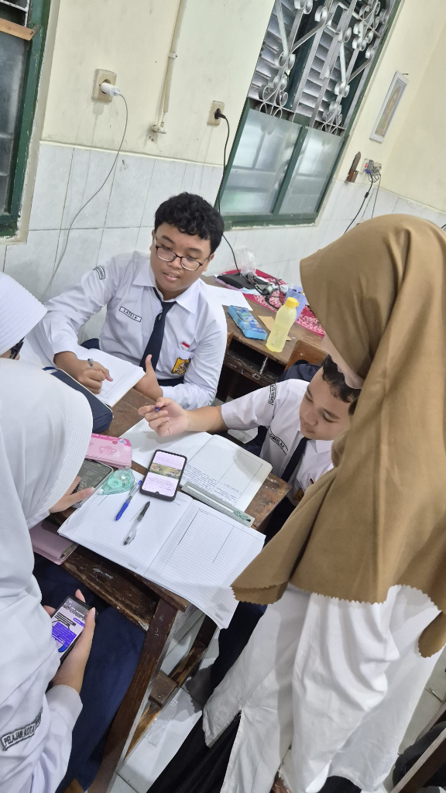
Dokumentasi Praktik Lab
Sesi Pendampingan Terbimbing Praktikum Lab Fisika Kelas 7I.
Rekapitulasi Tren Ketuntasan Belajar Siswa (Siklus 1 - Siklus 4)
Analisis Produk Rancangan Pembelajaran (Modul Ajar)
Telaah kritis dan refleksi modul ajar yang dirancang dan diterapkan pada Praktik Mengajar Mandiri PPL II di SMPN 5 Yogyakarta. Klik siklus di bawah untuk melihat rincian dokumen dan analisis perancangan.
Analisis Rancangan: Fase Terbimbing (2 Pertemuan)
Guided Inquiry LearningRPM Merancang Percobaan
Hakikat Sains: Merancang Desain Percobaan Ilmiah & Identifikasi 3 Variabel.
- Google Drive: Hakikat sains & proposal perancangan percobaan.
RPM Melakukan Percobaan
Metode Ilmiah: Eksekusi Praktikum Lab, Pengukuran Presisi & Analisis Bukti.
- Google Drive: Eksekusi praktikum fisika lab & olah grafik.
Analisis & Evaluasi Pelaksanaan: Fase Terbimbing (2 Pertemuan)
Deskripsi Praktik Mengajar: Praktik mengajar terbimbing dilaksanakan secara berkesinambungan dalam dua pertemuan mengusung model Discovery Learning pada materi Merancang & Melakukan Percobaan IPA. Pertemuan pertama difokuskan pada penemuan langkah ilmiah, identifikasi 3 jenis variabel (bebas, terikat, kontrol), dan penyusunan proposal praktikum. Pertemuan kedua diisi dengan eksekusi praktikum riil di Laboratorium Fisika, pencatatan data empiris, pengolahan grafik, serta presentasi pleno interaktif.
Strategi Pembelajaran Utama
Discovery Learning
Stimulus fenomena, identifikasi masalah, pengumpulan & pengolahan data, verifikasi, serta penarikan kesimpulan mandiri.
Collaborative Inquiry
Diskusi kelompok heterogen merumuskan hipotesis, memilih alat/bahan, dan membagi peran pengamatan lab.
Praktikum Lab Fisika
Pengalaman manipulatif langsung menguji rancangan kerja, membaca instrumen presisi, dan mencatat bukti empiris.
Presentasi & Refleksi
Sesi pleno pertanggungjawaban ilmiah antar-kelompok dan refleksi bersama kesesuaian prosedur.
- Peningkatan Kreativitas Peserta Didik: Kebebasan merancang ide menghasilkan variasi jenis percobaan yang beragam antar-kelompok.
- Melatih Berpikir Kritis & Logika Variabel: Murid mampu membedakan variabel bebas, terikat, dan kontrol secara mandiri.
- Tingkat Keaktifan & Keterlibatan Tinggi: Peserta didik sangat aktif berdiskusi, menyampaikan ide, dan mengeksekusi alat praktikum.
- Pengalaman Belajar Bermakna (Meaningful Learning): Alur ilmiah utuh dari perancangan hingga pengujian bukti empiris.
- Pengembangan Keterampilan Proses Sains: Mengasah kemampuan mengamati, mengukur, menganalisis data kuantitatif, dan menyimpulkan.
- Media Awal Pembelajaran Belum Optimal: Media awal masih sederhana dan belum sepenuhnya memberikan visualisasi kuat dalam perancangan.
- Scaffolding Guru Belum Bertahap: Beberapa kelompok masih mengalami kesulitan menentukan variabel tanpa bantuan arahan langsung guru.
- Kesenjangan Kemandirian Antar-Murid: Murid cepat langsung berprogres, sedangkan beberapa murid masih butuh pertanyaan pemantik terarah.
- Manajemen Durasi Konsultasi: Merancang percobaan butuh waktu konsultasi proposal yang relatif panjang sebelum praktikum.
Analisis Rancangan: Siklus 1 - Hakikat Sains & Pengukuran (3 Pertemuan)
Understanding by Design (UbD)RPM Pengukuran
Pengukuran: Besaran Pokok, Turunan, dan Satuan Standar Laboratorium.
- Google Drive: Modul Pengukuran Besaran Pokok, Turunan & Satuan Standar.
RPM Praktik Pengukuran
Praktikum Pengukuran: Scaffolding Nonius Jangka Sorong & Neraca Ohaus.
- Google Drive: Scaffolding penggunaan Jangka Sorong & Neraca Ohaus.
RPM Wujud Zat
Wujud Zat: Partikel Submikroskopis Berbantuan Web Mobile & LKPD Fisik.
- Google Drive: Modul Partikel Submikroskopis Wujud Zat & Web Mobile.
Analisis & Evaluasi Pelaksanaan: Siklus 1 (Pertemuan 3, 4, 5)
Deskripsi Praktik Mengajar Mandiri: Praktik mandiri dilaksanakan secara berkelanjutan selama 3 tatap muka. P3 difokuskan pada penanaman konsep dasar besaran pokok/turunan & SI melalui apersepsi kontekstual (jengkal vs SI). P4 diisi dengan praktikum instrumen presisi riil (jangka sorong, mikrometer sekrup, neraca teknis). P5 memadukan simulasi Web Interaktif "Petualangan Zat" mandiri berbasis gawai dengan LKPD cetak sebagai stabilisator kognitif.
Matriks Strategi Pembelajaran Multimodal
| Aspek Pembelajaran | Pertemuan 3 (Konsep Pengukuran) | Pertemuan 4 (Praktikum Pengukuran) | Pertemuan 5 (Wujud Zat Web Interaktif) |
|---|---|---|---|
| Model / Strategi | Direct-Interactive Instruction | Cooperative Inquiry & Hands-on Science | Independent Digital Learning & Discovery |
| Media Utama | Papan tulis, presentasi visual konseptual | Instrumen fisik (jangka sorong, mikrometer, neraca) | Aplikasi Web Interaktif smartphone |
| Media Penunjang | Lembar latihan dasar | Panduan praktikum terstruktur | LKPD berbasis kertas (kognitif anchor) |
| Bentuk Keterlibatan | Diskusi interaktif & penalaran logis | Manipulasi instrumen & analisis data | Navigasi mandiri, simulasi & sintesis visual |
| Tingkat Partisipasi | Cukup aktif (didominasi murid vokal) | Sangat aktif, menyeluruh di semua kelompok | Sangat tinggi, mandiri dengan pengawasan aktif |
- Modalitas Akademik & Kemandirian Belajar Tinggi: Murid SMPN 5 Yogyakarta mampu menguasai pengoperasian instrumen ukur baru dalam waktu singkat.
- Antusiasme Berbasis Aktivitas Manipulatif & Digital: Lonjakan keterlibatan emosional dan kognitif masif saat berpindah dari teori ke praktikum fisik & web.
- Efisiensi Kolaborasi Kelompok Organik: Saling membantu dalam pembacaan skala jangka sorong/mikrometer dan diskusi verifikasi data.
- Fungsi Stabilisator LKPD Cetak: Lembar fisik berhasil mengendapkan stimulasi gawai digital agar murid merefleksikan kesimpulan secara mendalam.
- Ketidakseimbangan Tingkat Kesukaran (P3): Latihan teoretis dasar terlalu cepat selesai bagi murid berkecepatan tinggi, berisiko menimbulkan kebosanan.
- Disorientasi Alur Navigasi Digital (P5): Belum ada ground rules eksplisit, murid cenderung melompati apersepsi langsung ke kuis digital.
- Friksi Waktu Jam Pelaksanaan: Pemangkasan jam reguler sekolah membatasi alokasi waktu guru untuk diskusi refleksi penutup.
1. Learner-Centered Planning: Desain RPP kelas berkapasitas tinggi wajib menyertakan tantangan kognitif HOTS sejak awal perencanaan agar murid tidak bosan.
2. Regulasi Media Digital: Penggunaan gawai membutuhkan ground rules eksplisit: kapan gawai dibuka, menu apa yang diakses bersama, dan kontrol alur.
3. Refleksi Praktikan: Pembelajaran efektif bukanlah yang sekadar tenang, melainkan yang mampu mengusik nalar kritis murid. Dinamika kelas yang riuh oleh diskusi ilmiah justru menghadirkan meaningful learning yang membekas.
Analisis Rancangan: Siklus 2 - Zat dan Perubahannya (3 Pertemuan)
Teaching at the Right Level (TaRL)RPM Perubahan Wujud
Perubahan Wujud: Diferensiasi 3 Level TaRL (Es, Air, Uap).
- Google Drive: Modul Perubahan Wujud Zat berbasis Diferensiasi 3 Level TaRL.
RPM Fisika & Kimia
Perubahan Fisika dan Kimia: Indikator Reaksi & Gamifikasi Kuis.
- Google Drive: Modul Perubahan Fisika & Kimia, Indikator Reaksi & Gamifikasi.
RPM Kerapatan Zat
Kerapatan Zat: Massa Jenis, Daya Apung & Prinsip Kapal Selam.
- Google Drive: Modul Kerapatan Zat, Massa Jenis, Daya Apung & Kapal Selam.
Analisis & Evaluasi Pelaksanaan: Siklus 2 (Pertemuan 6, 7, 8)
Deskripsi Praktik Mengajar: Pembelajaran menerapkan pendekatan Teaching at the Right Level (TaRL) dipadukan dengan media Web Interaktif "Petualangan Zat dan Perubahannya". P6 berfokus pada Perubahan Wujud dengan LKPD berdiferensiasi 3 level. P7 menghadirkan materi Perubahan Fisika-Kimia dengan perbaikan menu navigasi lengkap & gamifikasi quiz digital. P8 berfokus pada Kerapatan Zat dengan pemberian tantangan kognitif +1 level di atas kemampuan awal, yang berhasil meningkatkan indikator rasa ingin tahu siswa secara optimal sehingga PTK dihentikan secara sukses di siklus ini.
Strategi Pembelajaran Utama
Teaching at the Right Level (TaRL)
Tugas & LKPD berdiferensiasi sesuai tingkat kesiapan belajar kelompok (Sadar, Cakap, Mahir).
Digital Inquiry via Web
Visualisasi partikel molekuler submikroskopis dan simulasi perubahan wujud interaktif berbasis gawai.
Gamifikasi Pembelajaran
Gim digital edukatif di akhir alur web sebagai sarana penguatan konsep dan evaluasi mandiri rekreatif.
Progressive Challenging Tasks
Pemberian materi +1 level di atas rata-rata pada Kerapatan Zat untuk memicu daya nalar kritis siswa.
- Sistem Web Bebas Galat Teknis: Perbaikan sistem web dari Siklus 1 membuat konsentrasi belajar murid terfokus penuh pada materi.
- Efektivitas TaRL Membangun Atensi Kelas: LKPD bertingkat mendorong murid menyimak presentasi kelompok lain secara aktif untuk melengkapi pemahaman.
- Kemandirian Eksplorasi Navigasi: Penambahan menu navigasi di P7 memudahkan murid berpindah materi sesuai ritme belajarnya.
- Gamifikasi Edukatif yang Memikat: Integrasi gim digital menjaga motivasi dan keterlibatan emosional murid hingga akhir sesi.
- Lonjakan Rasa Ingin Tahu & Kognitif: Tantangan +1 level pada Kerapatan Zat berhasil menaikkan indikator PTK secara signifikan.
- Navigasi Awal Kurang Terbuka (P6): Belum tersedianya ikon daftar isi di P6 sempat membatasi keleluasaan murid mengeksplorasi modul.
- Waktu Verifikasi Presentasi TaRL Lebih Panjang: Perbedaan variasi tugas TaRL butuh durasi konfirmasi konsep yang lebih intensif dari guru.
- Kebutuhan Bimbingan Analisis Matematis: Peningkatan level materi Kerapatan Zat menuntut pendampingan khusus pada perhitungan rasio massa jenis.
Analisis Rancangan: Siklus 3 - Rekayasa STEM & Inkuiri (3 Pertemuan)
Inquiry & STEM AppliedRPM Siklus Air
Siklus Air: Evaporasi, Kondensasi, Presipitasi & Konservasi Air.
- Google Drive: Modul Siklus Air (Evaporasi, Kondensasi, Presipitasi) & Konservasi.
RPM Praktikum Massa Jenis
Massa Jenis Benda: Pengukuran Massa & Volume Benda Tak Teratur.
- Google Drive: Modul Praktikum Massa Jenis & Pengukuran Benda Tidak Teratur.
RPM Praktikum Reaksi Kimia
Perubahan Kimia & Fisika: Pembuktian Langsung Reaksi Lab.
- Google Drive: Modul Praktikum Pembuktian Reaksi Kimia & Perubahan Fisika.
Analisis & Evaluasi Pelaksanaan: Siklus 3 (Pertemuan 9, 10, 11)
Deskripsi Praktik Mengajar: Pembelajaran memadukan media animasi konseptual, praktikum laboratorium fisik, serta laboratorium maya (virtual lab). P9 membahas Siklus Air dengan tayangan animasi interaktif daur hidrologi. P10 diisi Praktikum Massa Jenis di lab; ketika ditemukan eror kalibrasi pada neraca fisik, guru dengan cepat mengarahkan murid mengakses Virtual Lab berbasis web sebagai contingency plan untuk memvalidasi data ideal. P11 diisi Praktikum Perubahan Fisika & Kimia yang berjalan sangat mandiri, lancar, dan tertib.
Strategi Pembelajaran Utama
Visual-Conceptual Animasi
Visualisasi animasi interaktif mereduksi kerumitan proses daur hidrologi (evaporasi, kondensasi, presipitasi).
Hands-on Lab Inquiry
Pengalaman manipulatif riil mengukur massa & volume zat serta mengamati reaksi kimia di laboratorium.
Blended Virtual Laboratory
Integrasi lab maya berbasis web sebagai sistem pendukung saat instrumen fisik lab mengalami eror kalibrasi.
Adaptive Contingency Plan
Respon manajerial cepat guru mengamankan pemahaman konsep siswa dari ancaman miskonsepsi akibat eror alat.
- Visualisasi Animasi Sangat Efektif: Memudahkan murid memahami alur daur hidrologi dan memperkuat retensi konsep.
- Keterlibatan Aktif Praktikum Fisik: Interaksi langsung dengan alat & bahan lab menciptakan pengalaman belajar konkret bermakna.
- Respon Adaptif Virtual Lab Berhasil: Pengalihan cepat ke peramban lab maya menyelamatkan akurasi data massa jenis dari miskonsepsi.
- Kemandirian Prosedur Praktikum Matang: Murid mampu menjalankan instruksi praktikum perubahan fisika/kimia di P11 secara lancar tanpa instruksi berulang.
- Manajemen Kelas Sangat Kondusif: Antusiasme tinggi beriringan dengan ketertiban kelas yang sangat mudah dikondisikan.
- Kondisi Kalibrasi Alat Lab Fisik: Beberapa neraca teknis lama yang tidak terkalibrasi menyebabkan deviasi angka timbangan awal.
- Kebutuhan Akses Perangkat di Lab: Penggunaan lab maya menuntut kesiapan gawai dan koneksi internet yang cepat di ruang laboratorium.
Analisis Rancangan: Siklus 4 - Suhu dan Kalor (3 Pertemuan)
Suhu & KalorRPM Hakikat Suhu
Hakikat Suhu: Uji Paradoks 3 Bejana Air & Indra Peraba vs Termometer.
- Google Drive: Modul Hakikat Suhu, Uji Paradoks 3 Bejana Air & Konversi Skala.
RPM Perpindahan Kalor 1
Perpindahan Kalor Kontekstual: Konduksi, Konveksi & Radiasi Termal.
- Google Drive: Modul Perpindahan Kalor Kontekstual (Konduksi, Konveksi, Radiasi).
RPM Perpindahan Energi Kalor
Investigasi Termos & Ventilasi Rumah Ramah Lingkungan.
- Google Drive: Modul Investigasi Termos & Rekayasa Ventilasi Rumah Ramah Lingkungan.
Analisis & Evaluasi Pelaksanaan: Siklus 4 (Pertemuan 12, 13)
Deskripsi Praktik Mengajar: Pembelajaran dilaksanakan pasca-AKM Bab 1 & 2 pada materi Suhu dan Kalor. P12 difokuskan pada materi Suhu dengan menguji keterbatasan indra peraba (kulit) melalui eksperimen 3 bejana air (hangat, biasa, dingin) untuk membuktikan pentingnya termometer baku, dilanjutkan konversi 4 skala suhu (C, R, F, K). P13 membahas Perpindahan Kalor (konduksi, konveksi, radiasi) yang diserap secara sangat cepat dan lancar oleh murid tanpa kendala konseptual.
Strategi Pembelajaran Utama
Inquiry 3 Bejana Air
Menguji subjektivitas kulit dalam merasakan suhu sebagai titik tolak kesadaran akan alat ukur terstandarisasi.
Mathematical & Conceptual Bridging
Menjembatani pemuaian zat cair dengan formulasi matematis rasio skala suhu (5:4:9:5) dan aljabar konversi.
Contextual Teaching (CTL)
Mengaitkan konduksi, konveksi, dan radiasi dengan fenomena nyata (masak air, radiasi surya, angin laut).
Peer Practice & Tutor Sebaya
Latihan bertingkat penyelesaian aljabar konversi suhu dengan bantuan pendampingan sebaya di kelompok.
- Motivasi Belajar Pasca-AKM Sangat Tinggi: Murid sangat percaya diri dan tertantang memasuki materi termal baru.
- Penanaman Konsep Berhasil Mencegah Miskonsepsi: Uji 3 bejana air membuktikan secara nyata bahwa indra kulit bersifat subjektif.
- Penguasaan Materi Cepat & Efektif: Penjelasan konsep perpindahan kalor berlangsung sangat mulus tanpa hambatan pedagogis.
- Kondusivitas & Efisiensi Kelas Sangat Terjaga: Alur instruksi guru diserap cepat, menciptakan suasana belajar yang fokus & dinamis.
- Variasi Kecepatan Hitung Aljabar Suhu: Konversi yang melibatkan faktor pergeseran Fahrenheit ($\pm 32$) butuh ketelitian ekstra bagi beberapa murid.
- Potensi Kejenuhan pada Materi Deskriptif: Materi perpindahan kalor yang terasa mudah berpotensi monoton jika tidak disertai tantangan rekayasa teknologi terapan (seperti desain termos/ventilasi).
Analisis Materi Pembelajaran yang Disusun dan Diterapkan
Telaah materi pembelajaran yang telah dikembangkan dan diajarkan selama praktik mengajar mandiri di Kelas 7I SMPN 5 Yogyakarta. Klik siklus untuk meninjau bahan ajar dan analisis gradasi kognitif.
Analisis Materi: Fase Terbimbing (2 Pertemuan)
Bahan Ajar PPTAnalisis & Evaluasi Pelaksanaan: Fase Terbimbing (2 Pertemuan)
Deskripsi Praktik Mengajar: Praktik mengajar terbimbing dilaksanakan secara berkesinambungan dalam dua pertemuan mengusung model Discovery Learning pada materi Merancang & Melakukan Percobaan IPA. Pertemuan pertama difokuskan pada penemuan langkah ilmiah, identifikasi 3 jenis variabel (bebas, terikat, kontrol), dan penyusunan proposal praktikum. Pertemuan kedua diisi dengan eksekusi praktikum riil di Laboratorium Fisika, pencatatan data empiris, pengolahan grafik, serta presentasi pleno interaktif.
Strategi Pembelajaran Utama
Discovery Learning
Stimulus fenomena, identifikasi masalah, pengumpulan & pengolahan data, verifikasi, serta penarikan kesimpulan mandiri.
Collaborative Inquiry
Diskusi kelompok heterogen merumuskan hipotesis, memilih alat/bahan, dan membagi peran pengamatan lab.
Praktikum Lab Fisika
Pengalaman manipulatif langsung menguji rancangan kerja, membaca instrumen presisi, dan mencatat bukti empiris.
Presentasi & Refleksi
Sesi pleno pertanggungjawaban ilmiah antar-kelompok dan refleksi bersama kesesuaian prosedur.
- Peningkatan Kreativitas Peserta Didik: Kebebasan merancang ide menghasilkan variasi jenis percobaan yang beragam antar-kelompok.
- Melatih Berpikir Kritis & Logika Variabel: Murid mampu membedakan variabel bebas, terikat, dan kontrol secara mandiri.
- Tingkat Keaktifan & Keterlibatan Tinggi: Peserta didik sangat aktif berdiskusi, menyampaikan ide, dan mengeksekusi alat praktikum.
- Pengalaman Belajar Bermakna (Meaningful Learning): Alur ilmiah utuh dari perancangan hingga pengujian bukti empiris.
- Pengembangan Keterampilan Proses Sains: Mengasah kemampuan mengamati, mengukur, menganalisis data kuantitatif, dan menyimpulkan.
- Media Awal Pembelajaran Belum Optimal: Media awal masih sederhana dan belum sepenuhnya memberikan visualisasi kuat dalam perancangan.
- Scaffolding Guru Belum Bertahap: Beberapa kelompok masih mengalami kesulitan menentukan variabel tanpa bantuan arahan langsung guru.
- Kesenjangan Kemandirian Antar-Murid: Murid cepat langsung berprogres, sedangkan beberapa murid masih butuh pertanyaan pemantik terarah.
- Manajemen Durasi Konsultasi: Merancang percobaan butuh waktu konsultasi proposal yang relatif panjang sebelum praktikum.
Analisis Materi: Siklus 1 (Pengukuran & Wujud Zat)
Bahan Ajar PPTAnalisis & Evaluasi Pelaksanaan: Siklus 1 (Pertemuan 3, 4, 5)
Deskripsi Praktik Mengajar Mandiri: Praktik mandiri dilaksanakan secara berkelanjutan selama 3 tatap muka. P3 difokuskan pada penanaman konsep dasar besaran pokok/turunan & SI melalui apersepsi kontekstual (jengkal vs SI). P4 diisi dengan praktikum instrumen presisi riil (jangka sorong, mikrometer sekrup, neraca teknis). P5 memadukan simulasi Web Interaktif "Petualangan Zat" mandiri berbasis gawai dengan LKPD cetak sebagai stabilisator kognitif.
Matriks Strategi Pembelajaran Multimodal
| Aspek Pembelajaran | Pertemuan 3 (Konsep Pengukuran) | Pertemuan 4 (Praktikum Pengukuran) | Pertemuan 5 (Wujud Zat Web Interaktif) |
|---|---|---|---|
| Model / Strategi | Direct-Interactive Instruction | Cooperative Inquiry & Hands-on Science | Independent Digital Learning & Discovery |
| Media Utama | Papan tulis, presentasi visual konseptual | Instrumen fisik (jangka sorong, mikrometer, neraca) | Aplikasi Web Interaktif smartphone |
| Media Penunjang | Lembar latihan dasar | Panduan praktikum terstruktur | LKPD berbasis kertas (kognitif anchor) |
| Bentuk Keterlibatan | Diskusi interaktif & penalaran logis | Manipulasi instrumen & analisis data | Navigasi mandiri, simulasi & sintesis visual |
| Tingkat Partisipasi | Cukup aktif (didominasi murid vokal) | Sangat aktif, menyeluruh di semua kelompok | Sangat tinggi, mandiri dengan pengawasan aktif |
- Modalitas Akademik & Kemandirian Belajar Tinggi: Murid SMPN 5 Yogyakarta mampu menguasai pengoperasian instrumen ukur baru dalam waktu singkat.
- Antusiasme Berbasis Aktivitas Manipulatif & Digital: Lonjakan keterlibatan emosional dan kognitif masif saat berpindah dari teori ke praktikum fisik & web.
- Efisiensi Kolaborasi Kelompok Organik: Saling membantu dalam pembacaan skala jangka sorong/mikrometer dan diskusi verifikasi data.
- Fungsi Stabilisator LKPD Cetak: Lembar fisik berhasil mengendapkan stimulasi gawai digital agar murid merefleksikan kesimpulan secara mendalam.
- Ketidakseimbangan Tingkat Kesukaran (P3): Latihan teoretis dasar terlalu cepat selesai bagi murid berkecepatan tinggi, berisiko menimbulkan kebosanan.
- Disorientasi Alur Navigasi Digital (P5): Belum ada ground rules eksplisit, murid cenderung melompati apersepsi langsung ke kuis digital.
- Friksi Waktu Jam Pelaksanaan: Pemangkasan jam reguler sekolah membatasi alokasi waktu guru untuk diskusi refleksi penutup.
1. Learner-Centered Planning: Desain RPP kelas berkapasitas tinggi wajib menyertakan tantangan kognitif HOTS sejak awal perencanaan agar murid tidak bosan.
2. Regulasi Media Digital: Penggunaan gawai membutuhkan ground rules eksplisit: kapan gawai dibuka, menu apa yang diakses bersama, dan kontrol alur.
3. Refleksi Praktikan: Pembelajaran efektif bukanlah yang sekadar tenang, melainkan yang mampu mengusik nalar kritis murid. Dinamika kelas yang riuh oleh diskusi ilmiah justru menghadirkan meaningful learning yang membekas.
Analisis Materi: Siklus 2 (Zat dan Perubahannya)
Bahan Ajar & WebAnalisis & Evaluasi Pelaksanaan: Siklus 2 (Pertemuan 6, 7, 8)
Deskripsi Praktik Mengajar: Pembelajaran menerapkan pendekatan Teaching at the Right Level (TaRL) dipadukan dengan media Web Interaktif "Petualangan Zat dan Perubahannya". P6 berfokus pada Perubahan Wujud dengan LKPD berdiferensiasi 3 level. P7 menghadirkan materi Perubahan Fisika-Kimia dengan perbaikan menu navigasi lengkap & gamifikasi quiz digital. P8 berfokus pada Kerapatan Zat dengan pemberian tantangan kognitif +1 level di atas kemampuan awal, yang berhasil meningkatkan indikator rasa ingin tahu siswa secara optimal sehingga PTK dihentikan secara sukses di siklus ini.
Strategi Pembelajaran Utama
Teaching at the Right Level (TaRL)
Tugas & LKPD berdiferensiasi sesuai tingkat kesiapan belajar kelompok (Sadar, Cakap, Mahir).
Digital Inquiry via Web
Visualisasi partikel molekuler submikroskopis dan simulasi perubahan wujud interaktif berbasis gawai.
Gamifikasi Pembelajaran
Gim digital edukatif di akhir alur web sebagai sarana penguatan konsep dan evaluasi mandiri rekreatif.
Progressive Challenging Tasks
Pemberian materi +1 level di atas rata-rata pada Kerapatan Zat untuk memicu daya nalar kritis siswa.
- Sistem Web Bebas Galat Teknis: Perbaikan sistem web dari Siklus 1 membuat konsentrasi belajar murid terfokus penuh pada materi.
- Efektivitas TaRL Membangun Atensi Kelas: LKPD bertingkat mendorong murid menyimak presentasi kelompok lain secara aktif untuk melengkapi pemahaman.
- Kemandirian Eksplorasi Navigasi: Penambahan menu navigasi di P7 memudahkan murid berpindah materi sesuai ritme belajarnya.
- Gamifikasi Edukatif yang Memikat: Integrasi gim digital menjaga motivasi dan keterlibatan emosional murid hingga akhir sesi.
- Lonjakan Rasa Ingin Tahu & Kognitif: Tantangan +1 level pada Kerapatan Zat berhasil menaikkan indikator PTK secara signifikan.
- Navigasi Awal Kurang Terbuka (P6): Belum tersedianya ikon daftar isi di P6 sempat membatasi keleluasaan murid mengeksplorasi modul.
- Waktu Verifikasi Presentasi TaRL Lebih Panjang: Perbedaan variasi tugas TaRL butuh durasi konfirmasi konsep yang lebih intensif dari guru.
- Kebutuhan Bimbingan Analisis Matematis: Peningkatan level materi Kerapatan Zat menuntut pendampingan khusus pada perhitungan rasio massa jenis.
Analisis Materi: Siklus 3 (Rekayasa STEM & Sains Terapan)
Bahan Ajar PPTAnalisis & Evaluasi Pelaksanaan: Siklus 3 (Pertemuan 9, 10, 11)
Deskripsi Praktik Mengajar: Pembelajaran memadukan media animasi konseptual, praktikum laboratorium fisik, serta laboratorium maya (virtual lab). P9 membahas Siklus Air dengan tayangan animasi interaktif daur hidrologi. P10 diisi Praktikum Massa Jenis di lab; ketika ditemukan eror kalibrasi pada neraca fisik, guru dengan cepat mengarahkan murid mengakses Virtual Lab berbasis web sebagai contingency plan untuk memvalidasi data ideal. P11 diisi Praktikum Perubahan Fisika & Kimia yang berjalan sangat mandiri, lancar, dan tertib.
Strategi Pembelajaran Utama
Visual-Conceptual Animasi
Visualisasi animasi interaktif mereduksi kerumitan proses daur hidrologi (evaporasi, kondensasi, presipitasi).
Hands-on Lab Inquiry
Pengalaman manipulatif riil mengukur massa & volume zat serta mengamati reaksi kimia di laboratorium.
Blended Virtual Laboratory
Integrasi lab maya berbasis web sebagai sistem pendukung saat instrumen fisik lab mengalami eror kalibrasi.
Adaptive Contingency Plan
Respon manajerial cepat guru mengamankan pemahaman konsep siswa dari ancaman miskonsepsi akibat eror alat.
- Visualisasi Animasi Sangat Efektif: Memudahkan murid memahami alur daur hidrologi dan memperkuat retensi konsep.
- Keterlibatan Aktif Praktikum Fisik: Interaksi langsung dengan alat & bahan lab menciptakan pengalaman belajar konkret bermakna.
- Respon Adaptif Virtual Lab Berhasil: Pengalihan cepat ke peramban lab maya menyelamatkan akurasi data massa jenis dari miskonsepsi.
- Kemandirian Prosedur Praktikum Matang: Murid mampu menjalankan instruksi praktikum perubahan fisika/kimia di P11 secara lancar tanpa instruksi berulang.
- Manajemen Kelas Sangat Kondusif: Antusiasme tinggi beriringan dengan ketertiban kelas yang sangat mudah dikondisikan.
- Kondisi Kalibrasi Alat Lab Fisik: Beberapa neraca teknis lama yang tidak terkalibrasi menyebabkan deviasi angka timbangan awal.
- Kebutuhan Akses Perangkat di Lab: Penggunaan lab maya menuntut kesiapan gawai dan koneksi internet yang cepat di ruang laboratorium.
Analisis Materi: Siklus 4 (Suhu & Kalor)
Bahan Ajar PPTAnalisis & Evaluasi Pelaksanaan: Siklus 4 (Pertemuan 12, 13)
Deskripsi Praktik Mengajar: Pembelajaran dilaksanakan pasca-AKM Bab 1 & 2 pada materi Suhu dan Kalor. P12 difokuskan pada materi Suhu dengan menguji keterbatasan indra peraba (kulit) melalui eksperimen 3 bejana air (hangat, biasa, dingin) untuk membuktikan pentingnya termometer baku, dilanjutkan konversi 4 skala suhu (C, R, F, K). P13 membahas Perpindahan Kalor (konduksi, konveksi, radiasi) yang diserap secara sangat cepat dan lancar oleh murid tanpa kendala konseptual.
Strategi Pembelajaran Utama
Inquiry 3 Bejana Air
Menguji subjektivitas kulit dalam merasakan suhu sebagai titik tolak kesadaran akan alat ukur terstandarisasi.
Mathematical & Conceptual Bridging
Menjembatani pemuaian zat cair dengan formulasi matematis rasio skala suhu (5:4:9:5) dan aljabar konversi.
Contextual Teaching (CTL)
Mengaitkan konduksi, konveksi, dan radiasi dengan fenomena nyata (masak air, radiasi surya, angin laut).
Peer Practice & Tutor Sebaya
Latihan bertingkat penyelesaian aljabar konversi suhu dengan bantuan pendampingan sebaya di kelompok.
- Motivasi Belajar Pasca-AKM Sangat Tinggi: Murid sangat percaya diri dan tertantang memasuki materi termal baru.
- Penanaman Konsep Berhasil Mencegah Miskonsepsi: Uji 3 bejana air membuktikan secara nyata bahwa indra kulit bersifat subjektif.
- Penguasaan Materi Cepat & Efektif: Penjelasan konsep perpindahan kalor berlangsung sangat mulus tanpa hambatan pedagogis.
- Kondusivitas & Efisiensi Kelas Sangat Terjaga: Alur instruksi guru diserap cepat, menciptakan suasana belajar yang fokus & dinamis.
- Variasi Kecepatan Hitung Aljabar Suhu: Konversi yang melibatkan faktor pergeseran Fahrenheit ($\pm 32$) butuh ketelitian ekstra bagi beberapa murid.
- Potensi Kejenuhan pada Materi Deskriptif: Materi perpindahan kalor yang terasa mudah berpotensi monoton jika tidak disertai tantangan rekayasa teknologi terapan (seperti desain termos/ventilasi).
Analisis Media Pembelajaran yang Dipergunakan
Telaah efektivitas dan ragam media pembelajaran (konkret laboratorium & digital web/kuis) yang dipergunakan dalam praktik mengajar mandiri di Kelas 7I SMPN 5 Yogyakarta.
Analisis Media: Fase Terbimbing (2 Pertemuan)
Guided Inquiry Media- Canva LKPD: Formulasi Hipotesis & Identifikasi 3 Variabel.
- Canva LKPD: Lembar Pengamatan Lab, Pencatatan Data & Plot Grafik.
Analisis & Evaluasi Pelaksanaan: Fase Terbimbing (2 Pertemuan)
Deskripsi Praktik Mengajar: Praktik mengajar terbimbing dilaksanakan secara berkesinambungan dalam dua pertemuan mengusung model Discovery Learning pada materi Merancang & Melakukan Percobaan IPA. Pertemuan pertama difokuskan pada penemuan langkah ilmiah, identifikasi 3 jenis variabel (bebas, terikat, kontrol), dan penyusunan proposal praktikum. Pertemuan kedua diisi dengan eksekusi praktikum riil di Laboratorium Fisika, pencatatan data empiris, pengolahan grafik, serta presentasi pleno interaktif.
Strategi Pembelajaran Utama
Discovery Learning
Stimulus fenomena, identifikasi masalah, pengumpulan & pengolahan data, verifikasi, serta penarikan kesimpulan mandiri.
Collaborative Inquiry
Diskusi kelompok heterogen merumuskan hipotesis, memilih alat/bahan, dan membagi peran pengamatan lab.
Praktikum Lab Fisika
Pengalaman manipulatif langsung menguji rancangan kerja, membaca instrumen presisi, dan mencatat bukti empiris.
Presentasi & Refleksi
Sesi pleno pertanggungjawaban ilmiah antar-kelompok dan refleksi bersama kesesuaian prosedur.
- Peningkatan Kreativitas Peserta Didik: Kebebasan merancang ide menghasilkan variasi jenis percobaan yang beragam antar-kelompok.
- Melatih Berpikir Kritis & Logika Variabel: Murid mampu membedakan variabel bebas, terikat, dan kontrol secara mandiri.
- Tingkat Keaktifan & Keterlibatan Tinggi: Peserta didik sangat aktif berdiskusi, menyampaikan ide, dan mengeksekusi alat praktikum.
- Pengalaman Belajar Bermakna (Meaningful Learning): Alur ilmiah utuh dari perancangan hingga pengujian bukti empiris.
- Pengembangan Keterampilan Proses Sains: Mengasah kemampuan mengamati, mengukur, menganalisis data kuantitatif, dan menyimpulkan.
- Media Awal Pembelajaran Belum Optimal: Media awal masih sederhana dan belum sepenuhnya memberikan visualisasi kuat dalam perancangan.
- Scaffolding Guru Belum Bertahap: Beberapa kelompok masih mengalami kesulitan menentukan variabel tanpa bantuan arahan langsung guru.
- Kesenjangan Kemandirian Antar-Murid: Murid cepat langsung berprogres, sedangkan beberapa murid masih butuh pertanyaan pemantik terarah.
- Manajemen Durasi Konsultasi: Merancang percobaan butuh waktu konsultasi proposal yang relatif panjang sebelum praktikum.
Analisis Media: Siklus 1 (Pengukuran & Wujud Zat)
Alat Ukur Riil & Web Mobile- Canva LKPD: Besaran Pokok & Satuan Standar Laboratorium.
- Canva LKPD: Panduan Alat Ukur Jangka Sorong & Neraca Ohaus.
- Canva LKPD: Penalaran Molekuler & Partikel Submikroskopis Wujud Zat.
- Google Drive: Instrumen Self-Report Minat & Rasa Ingin Tahu Sains Siswa Siklus 1.
- Google Drive: Lembar Pengamatan Perilaku & Aspek Rasa Ingin Tahu Siswa Siklus 1.
Jurnal Refleksi Siklus 1
Lampiran 7: Jurnal Refleksi Guru & Peserta Didik Siklus 1.
Lembar Penilaian Siklus 1
Lampiran 8: Lembar Evaluasi & Hasil Penilaian Pembelajaran Siklus 1.
Analisis & Evaluasi Pelaksanaan: Siklus 1 (Pertemuan 3, 4, 5)
Deskripsi Praktik Mengajar Mandiri: Praktik mandiri dilaksanakan secara berkelanjutan selama 3 tatap muka. P3 difokuskan pada penanaman konsep dasar besaran pokok/turunan & SI melalui apersepsi kontekstual (jengkal vs SI). P4 diisi dengan praktikum instrumen presisi riil (jangka sorong, mikrometer sekrup, neraca teknis). P5 memadukan simulasi Web Interaktif "Petualangan Zat" mandiri berbasis gawai dengan LKPD cetak sebagai stabilisator kognitif.
Matriks Strategi Pembelajaran Multimodal
| Aspek Pembelajaran | Pertemuan 3 (Konsep Pengukuran) | Pertemuan 4 (Praktikum Pengukuran) | Pertemuan 5 (Wujud Zat Web Interaktif) |
|---|---|---|---|
| Model / Strategi | Direct-Interactive Instruction | Cooperative Inquiry & Hands-on Science | Independent Digital Learning & Discovery |
| Media Utama | Papan tulis, presentasi visual konseptual | Instrumen fisik (jangka sorong, mikrometer, neraca) | Aplikasi Web Interaktif smartphone |
| Media Penunjang | Lembar latihan dasar | Panduan praktikum terstruktur | LKPD berbasis kertas (kognitif anchor) |
| Bentuk Keterlibatan | Diskusi interaktif & penalaran logis | Manipulasi instrumen & analisis data | Navigasi mandiri, simulasi & sintesis visual |
| Tingkat Partisipasi | Cukup aktif (didominasi murid vokal) | Sangat aktif, menyeluruh di semua kelompok | Sangat tinggi, mandiri dengan pengawasan aktif |
- Modalitas Akademik & Kemandirian Belajar Tinggi: Murid SMPN 5 Yogyakarta mampu menguasai pengoperasian instrumen ukur baru dalam waktu singkat.
- Antusiasme Berbasis Aktivitas Manipulatif & Digital: Lonjakan keterlibatan emosional dan kognitif masif saat berpindah dari teori ke praktikum fisik & web.
- Efisiensi Kolaborasi Kelompok Organik: Saling membantu dalam pembacaan skala jangka sorong/mikrometer dan diskusi verifikasi data.
- Fungsi Stabilisator LKPD Cetak: Lembar fisik berhasil mengendapkan stimulasi gawai digital agar murid merefleksikan kesimpulan secara mendalam.
- Ketidakseimbangan Tingkat Kesukaran (P3): Latihan teoretis dasar terlalu cepat selesai bagi murid berkecepatan tinggi, berisiko menimbulkan kebosanan.
- Disorientasi Alur Navigasi Digital (P5): Belum ada ground rules eksplisit, murid cenderung melompati apersepsi langsung ke kuis digital.
- Friksi Waktu Jam Pelaksanaan: Pemangkasan jam reguler sekolah membatasi alokasi waktu guru untuk diskusi refleksi penutup.
1. Learner-Centered Planning: Desain RPP kelas berkapasitas tinggi wajib menyertakan tantangan kognitif HOTS sejak awal perencanaan agar murid tidak bosan.
2. Regulasi Media Digital: Penggunaan gawai membutuhkan ground rules eksplisit: kapan gawai dibuka, menu apa yang diakses bersama, dan kontrol alur.
3. Refleksi Praktikan: Pembelajaran efektif bukanlah yang sekadar tenang, melainkan yang mampu mengusik nalar kritis murid. Dinamika kelas yang riuh oleh diskusi ilmiah justru menghadirkan meaningful learning yang membekas.
Analisis Media: Siklus 2 (Zat dan Perubahannya)
Lembar TaRL 3 Warna & Gamifikasi- Canva LKPD: Identifikasi Ciri Makroskopis Perubahan Wujud (TaRL 1).
- Canva LKPD: Analisis Penyerapan & Pelepasan Kalor (TaRL 2).
- Canva LKPD: Analisis Grafik Perubahan Wujud & Kalor Laten (TaRL 3).
- Canva LKPD: Identifikasi Ciri Reaksi Kimia & Fisika.
- Canva LKPD: Pengukuran Massa Jenis & Logika Kapal Selam.
- Google Drive: Self-Report Minat & Rasa Ingin Tahu Sains Siswa Siklus 2.
- Google Drive: Pengamatan Perilaku Rasa Ingin Tahu Siswa Siklus 2 (Final PTK).
Jurnal Refleksi Siklus 2
Lampiran 7: Jurnal Refleksi Guru & Peserta Didik Siklus 2.
Lembar Penilaian Siklus 2
Lampiran 8: Lembar Evaluasi & Hasil Penilaian Pembelajaran Siklus 2.
Analisis & Evaluasi Pelaksanaan: Siklus 2 (Pertemuan 6, 7, 8)
Deskripsi Praktik Mengajar: Pembelajaran menerapkan pendekatan Teaching at the Right Level (TaRL) dipadukan dengan media Web Interaktif "Petualangan Zat dan Perubahannya". P6 berfokus pada Perubahan Wujud dengan LKPD berdiferensiasi 3 level. P7 menghadirkan materi Perubahan Fisika-Kimia dengan perbaikan menu navigasi lengkap & gamifikasi quiz digital. P8 berfokus pada Kerapatan Zat dengan pemberian tantangan kognitif +1 level di atas kemampuan awal, yang berhasil meningkatkan indikator rasa ingin tahu siswa secara optimal sehingga PTK dihentikan secara sukses di siklus ini.
Strategi Pembelajaran Utama
Teaching at the Right Level (TaRL)
Tugas & LKPD berdiferensiasi sesuai tingkat kesiapan belajar kelompok (Sadar, Cakap, Mahir).
Digital Inquiry via Web
Visualisasi partikel molekuler submikroskopis dan simulasi perubahan wujud interaktif berbasis gawai.
Gamifikasi Pembelajaran
Gim digital edukatif di akhir alur web sebagai sarana penguatan konsep dan evaluasi mandiri rekreatif.
Progressive Challenging Tasks
Pemberian materi +1 level di atas rata-rata pada Kerapatan Zat untuk memicu daya nalar kritis siswa.
- Sistem Web Bebas Galat Teknis: Perbaikan sistem web dari Siklus 1 membuat konsentrasi belajar murid terfokus penuh pada materi.
- Efektivitas TaRL Membangun Atensi Kelas: LKPD bertingkat mendorong murid menyimak presentasi kelompok lain secara aktif untuk melengkapi pemahaman.
- Kemandirian Eksplorasi Navigasi: Penambahan menu navigasi di P7 memudahkan murid berpindah materi sesuai ritme belajarnya.
- Gamifikasi Edukatif yang Memikat: Integrasi gim digital menjaga motivasi dan keterlibatan emosional murid hingga akhir sesi.
- Lonjakan Rasa Ingin Tahu & Kognitif: Tantangan +1 level pada Kerapatan Zat berhasil menaikkan indikator PTK secara signifikan.
- Navigasi Awal Kurang Terbuka (P6): Belum tersedianya ikon daftar isi di P6 sempat membatasi keleluasaan murid mengeksplorasi modul.
- Waktu Verifikasi Presentasi TaRL Lebih Panjang: Perbedaan variasi tugas TaRL butuh durasi konfirmasi konsep yang lebih intensif dari guru.
- Kebutuhan Bimbingan Analisis Matematis: Peningkatan level materi Kerapatan Zat menuntut pendampingan khusus pada perhitungan rasio massa jenis.
Analisis Media: Siklus 3 (Rekayasa STEM & Inkuiri)
Model Simulasi & Neraca Tiga Lengan- Canva LKPD: Investigasi Model Terrarium Daur Hidrologi / Siklus Air.
- Canva LKPD: Praktikum Pengukuran Massa & Volume Benda Terukur.
- Praktikum Kimia Fisika Siklus 3 belum dilaksanakan / dalam tahap pengembangan.
Analisis & Evaluasi Pelaksanaan: Siklus 3 (Pertemuan 9, 10, 11)
Deskripsi Praktik Mengajar: Pembelajaran memadukan media animasi konseptual, praktikum laboratorium fisik, serta laboratorium maya (virtual lab). P9 membahas Siklus Air dengan tayangan animasi interaktif daur hidrologi. P10 diisi Praktikum Massa Jenis di lab; ketika ditemukan eror kalibrasi pada neraca fisik, guru dengan cepat mengarahkan murid mengakses Virtual Lab berbasis web sebagai contingency plan untuk memvalidasi data ideal. P11 diisi Praktikum Perubahan Fisika & Kimia yang berjalan sangat mandiri, lancar, dan tertib.
Strategi Pembelajaran Utama
Visual-Conceptual Animasi
Visualisasi animasi interaktif mereduksi kerumitan proses daur hidrologi (evaporasi, kondensasi, presipitasi).
Hands-on Lab Inquiry
Pengalaman manipulatif riil mengukur massa & volume zat serta mengamati reaksi kimia di laboratorium.
Blended Virtual Laboratory
Integrasi lab maya berbasis web sebagai sistem pendukung saat instrumen fisik lab mengalami eror kalibrasi.
Adaptive Contingency Plan
Respon manajerial cepat guru mengamankan pemahaman konsep siswa dari ancaman miskonsepsi akibat eror alat.
- Visualisasi Animasi Sangat Efektif: Memudahkan murid memahami alur daur hidrologi dan memperkuat retensi konsep.
- Keterlibatan Aktif Praktikum Fisik: Interaksi langsung dengan alat & bahan lab menciptakan pengalaman belajar konkret bermakna.
- Respon Adaptif Virtual Lab Berhasil: Pengalihan cepat ke peramban lab maya menyelamatkan akurasi data massa jenis dari miskonsepsi.
- Kemandirian Prosedur Praktikum Matang: Murid mampu menjalankan instruksi praktikum perubahan fisika/kimia di P11 secara lancar tanpa instruksi berulang.
- Manajemen Kelas Sangat Kondusif: Antusiasme tinggi beriringan dengan ketertiban kelas yang sangat mudah dikondisikan.
- Kondisi Kalibrasi Alat Lab Fisik: Beberapa neraca teknis lama yang tidak terkalibrasi menyebabkan deviasi angka timbangan awal.
- Kebutuhan Akses Perangkat di Lab: Penggunaan lab maya menuntut kesiapan gawai dan koneksi internet yang cepat di ruang laboratorium.
Analisis Media: Siklus 4 (Suhu & Kalor)
Bejana Konkret & Simulasi Skala- Canva LKPD: Uji 3 Bejana Air & Kalibrasi Skala Termometer.
- Canva LKPD: Investigasi Konduksi, Konveksi & Radiasi Termal.
Analisis & Evaluasi Pelaksanaan: Siklus 4 (Pertemuan 12, 13)
Deskripsi Praktik Mengajar: Pembelajaran dilaksanakan pasca-AKM Bab 1 & 2 pada materi Suhu dan Kalor. P12 difokuskan pada materi Suhu dengan menguji keterbatasan indra peraba (kulit) melalui eksperimen 3 bejana air (hangat, biasa, dingin) untuk membuktikan pentingnya termometer baku, dilanjutkan konversi 4 skala suhu (C, R, F, K). P13 membahas Perpindahan Kalor (konduksi, konveksi, radiasi) yang diserap secara sangat cepat dan lancar oleh murid tanpa kendala konseptual.
Strategi Pembelajaran Utama
Inquiry 3 Bejana Air
Menguji subjektivitas kulit dalam merasakan suhu sebagai titik tolak kesadaran akan alat ukur terstandarisasi.
Mathematical & Conceptual Bridging
Menjembatani pemuaian zat cair dengan formulasi matematis rasio skala suhu (5:4:9:5) dan aljabar konversi.
Contextual Teaching (CTL)
Mengaitkan konduksi, konveksi, dan radiasi dengan fenomena nyata (masak air, radiasi surya, angin laut).
Peer Practice & Tutor Sebaya
Latihan bertingkat penyelesaian aljabar konversi suhu dengan bantuan pendampingan sebaya di kelompok.
- Motivasi Belajar Pasca-AKM Sangat Tinggi: Murid sangat percaya diri dan tertantang memasuki materi termal baru.
- Penanaman Konsep Berhasil Mencegah Miskonsepsi: Uji 3 bejana air membuktikan secara nyata bahwa indra kulit bersifat subjektif.
- Penguasaan Materi Cepat & Efektif: Penjelasan konsep perpindahan kalor berlangsung sangat mulus tanpa hambatan pedagogis.
- Kondusivitas & Efisiensi Kelas Sangat Terjaga: Alur instruksi guru diserap cepat, menciptakan suasana belajar yang fokus & dinamis.
- Variasi Kecepatan Hitung Aljabar Suhu: Konversi yang melibatkan faktor pergeseran Fahrenheit ($\pm 32$) butuh ketelitian ekstra bagi beberapa murid.
- Potensi Kejenuhan pada Materi Deskriptif: Materi perpindahan kalor yang terasa mudah berpotensi monoton jika tidak disertai tantangan rekayasa teknologi terapan (seperti desain termos/ventilasi).
Analisis Video Pelaksanaan Praktik Mengajar
Evaluasi berbasis rekaman video unjuk kinerja pembelajaran di Kelas 7I SMPN 5 Yogyakarta. Klik siklus di bawah untuk meninjau rekaman video, timeline interaktif, dan analisis reflektif pedagogis.
Rekaman Video & Timeline: Siklus 1
Siklus 1 VideoAnalisis & Evaluasi Pelaksanaan: Siklus 1 (Pertemuan 3, 4, 5)
Deskripsi Praktik Mengajar Mandiri: Praktik mandiri dilaksanakan secara berkelanjutan selama 3 tatap muka. P3 difokuskan pada penanaman konsep dasar besaran pokok/turunan & SI melalui apersepsi kontekstual (jengkal vs SI). P4 diisi dengan praktikum instrumen presisi riil (jangka sorong, mikrometer sekrup, neraca teknis). P5 memadukan simulasi Web Interaktif "Petualangan Zat" mandiri berbasis gawai dengan LKPD cetak sebagai stabilisator kognitif.
Matriks Strategi Pembelajaran Multimodal
| Aspek Pembelajaran | Pertemuan 3 (Konsep Pengukuran) | Pertemuan 4 (Praktikum Pengukuran) | Pertemuan 5 (Wujud Zat Web Interaktif) |
|---|---|---|---|
| Model / Strategi | Direct-Interactive Instruction | Cooperative Inquiry & Hands-on Science | Independent Digital Learning & Discovery |
| Media Utama | Papan tulis, presentasi visual konseptual | Instrumen fisik (jangka sorong, mikrometer, neraca) | Aplikasi Web Interaktif smartphone |
| Media Penunjang | Lembar latihan dasar | Panduan praktikum terstruktur | LKPD berbasis kertas (kognitif anchor) |
| Bentuk Keterlibatan | Diskusi interaktif & penalaran logis | Manipulasi instrumen & analisis data | Navigasi mandiri, simulasi & sintesis visual |
| Tingkat Partisipasi | Cukup aktif (didominasi murid vokal) | Sangat aktif, menyeluruh di semua kelompok | Sangat tinggi, mandiri dengan pengawasan aktif |
- Modalitas Akademik & Kemandirian Belajar Tinggi: Murid SMPN 5 Yogyakarta mampu menguasai pengoperasian instrumen ukur baru dalam waktu singkat.
- Antusiasme Berbasis Aktivitas Manipulatif & Digital: Lonjakan keterlibatan emosional dan kognitif masif saat berpindah dari teori ke praktikum fisik & web.
- Efisiensi Kolaborasi Kelompok Organik: Saling membantu dalam pembacaan skala jangka sorong/mikrometer dan diskusi verifikasi data.
- Fungsi Stabilisator LKPD Cetak: Lembar fisik berhasil mengendapkan stimulasi gawai digital agar murid merefleksikan kesimpulan secara mendalam.
- Ketidakseimbangan Tingkat Kesukaran (P3): Latihan teoretis dasar terlalu cepat selesai bagi murid berkecepatan tinggi, berisiko menimbulkan kebosanan.
- Disorientasi Alur Navigasi Digital (P5): Belum ada ground rules eksplisit, murid cenderung melompati apersepsi langsung ke kuis digital.
- Friksi Waktu Jam Pelaksanaan: Pemangkasan jam reguler sekolah membatasi alokasi waktu guru untuk diskusi refleksi penutup.
1. Learner-Centered Planning: Desain RPP kelas berkapasitas tinggi wajib menyertakan tantangan kognitif HOTS sejak awal perencanaan agar murid tidak bosan.
2. Regulasi Media Digital: Penggunaan gawai membutuhkan ground rules eksplisit: kapan gawai dibuka, menu apa yang diakses bersama, dan kontrol alur.
3. Refleksi Praktikan: Pembelajaran efektif bukanlah yang sekadar tenang, melainkan yang mampu mengusik nalar kritis murid. Dinamika kelas yang riuh oleh diskusi ilmiah justru menghadirkan meaningful learning yang membekas.
Garis Waktu (Timeline) Video Siklus 1
Klik fase timeline untuk mengarahkan pemutar simulasi
Fase Apersepsi: Demonstrasi Alat Ukur Baku
Pengondisian kelas & relaksasi teknik STOP sebelum praktikum.
Fase Praktikum: Pengukuran Skala Nonius
Pendampingan (scaffolding) membaca jangka sorong & mikrometer sekrup.
Fase Penalaran: Simulasi Web Submikroskopis
Eksplorasi pergerakan partikel wujud zat pada gawai gawai siswa.
Rekaman Video & Timeline: Siklus 2
Siklus 2 VideoAnalisis & Evaluasi Pelaksanaan: Siklus 2 (Pertemuan 6, 7, 8)
Deskripsi Praktik Mengajar: Pembelajaran menerapkan pendekatan Teaching at the Right Level (TaRL) dipadukan dengan media Web Interaktif "Petualangan Zat dan Perubahannya". P6 berfokus pada Perubahan Wujud dengan LKPD berdiferensiasi 3 level. P7 menghadirkan materi Perubahan Fisika-Kimia dengan perbaikan menu navigasi lengkap & gamifikasi quiz digital. P8 berfokus pada Kerapatan Zat dengan pemberian tantangan kognitif +1 level di atas kemampuan awal, yang berhasil meningkatkan indikator rasa ingin tahu siswa secara optimal sehingga PTK dihentikan secara sukses di siklus ini.
Strategi Pembelajaran Utama
Teaching at the Right Level (TaRL)
Tugas & LKPD berdiferensiasi sesuai tingkat kesiapan belajar kelompok (Sadar, Cakap, Mahir).
Digital Inquiry via Web
Visualisasi partikel molekuler submikroskopis dan simulasi perubahan wujud interaktif berbasis gawai.
Gamifikasi Pembelajaran
Gim digital edukatif di akhir alur web sebagai sarana penguatan konsep dan evaluasi mandiri rekreatif.
Progressive Challenging Tasks
Pemberian materi +1 level di atas rata-rata pada Kerapatan Zat untuk memicu daya nalar kritis siswa.
- Sistem Web Bebas Galat Teknis: Perbaikan sistem web dari Siklus 1 membuat konsentrasi belajar murid terfokus penuh pada materi.
- Efektivitas TaRL Membangun Atensi Kelas: LKPD bertingkat mendorong murid menyimak presentasi kelompok lain secara aktif untuk melengkapi pemahaman.
- Kemandirian Eksplorasi Navigasi: Penambahan menu navigasi di P7 memudahkan murid berpindah materi sesuai ritme belajarnya.
- Gamifikasi Edukatif yang Memikat: Integrasi gim digital menjaga motivasi dan keterlibatan emosional murid hingga akhir sesi.
- Lonjakan Rasa Ingin Tahu & Kognitif: Tantangan +1 level pada Kerapatan Zat berhasil menaikkan indikator PTK secara signifikan.
- Navigasi Awal Kurang Terbuka (P6): Belum tersedianya ikon daftar isi di P6 sempat membatasi keleluasaan murid mengeksplorasi modul.
- Waktu Verifikasi Presentasi TaRL Lebih Panjang: Perbedaan variasi tugas TaRL butuh durasi konfirmasi konsep yang lebih intensif dari guru.
- Kebutuhan Bimbingan Analisis Matematis: Peningkatan level materi Kerapatan Zat menuntut pendampingan khusus pada perhitungan rasio massa jenis.
Garis Waktu (Timeline) Video Siklus 2
Klik fase timeline untuk mengarahkan pemutar simulasi
Fase TaRL: Diferensiasi Lembar Kerja 3 Level
Pengelompokan siswa berdasarkan tingkat kesiapan kognitif awal.
Fase Eksperimen: Indikator Reaksi Kimia
Pengamatan pembentukan gas cuka soda kue & endapan kimia.
Fase Gamifikasi: Kuis Penutup Interaktif
Refleksi pembelajaran berbasis kuis peramban gawai.
Rekaman Video & Timeline: Siklus 3 & 4
Siklus 3-4 VideoAnalisis & Evaluasi Pelaksanaan: Siklus 3 & 4 (Pertemuan 9 – 13)
Deskripsi Praktik Mengajar Mandiri: Pembelajaran pada Siklus 3 & 4 mengombinasikan praktikum laboratorium riil (Blended Virtual & Real Lab) dengan pembelajaran kontekstual Suhu dan Kalor (Thermal Inquiry & CTL). Pada Siklus 3, guru secara adaptif memadukan lab fisik dan virtual lab saat ditemukan deviasi alat. Pada Siklus 4, eksperimen 3 bejana air dan konversi skala suhu menguji ketelitian sains siswa secara mendalam.
Strategi Pembelajaran Utama
Blended Virtual Lab
Integrasi laboratorium maya berbasis web sebagai contingency plan validasi data presisi.
Real Lab Inquiry
Praktikum fisik pengukuran massa jenis dan indikator reaksi fisika-kimia.
Inquiry 3 Bejana Air
Menguji subjektivitas kulit sebagai pendorong kesadaran termometer terkalibrasi.
Contextual Teaching (CTL)
Menghubungkan perpindahan kalor (konduksi, konveksi, radiasi) dengan fenomena nyata.
- Adaptasi Manajerial Cepat: Pengalihan ke virtual lab menyelamatkan akurasi konsep dari eror alat fisik.
- Mencegah Miskonsepsi Suhu: Uji 3 bejana air secara nyata membuktikan batas indra peraba.
- Kemandirian Prosedur Praktikum Tinggi: Alur instruksi diserap cepat, menciptakan suasana kelas dinamis.
- Kondisi Alat Lab Fisik: Neraca lama butuh kalibrasi ulang berkala.
- Ketelitian Hitung Aljabar Suhu: Konversi Fahrenheit memerlukan pendampingan ketelitian matematika.
Garis Waktu (Timeline) Video Siklus 3 & 4
Klik fase timeline untuk mengarahkan pemutar simulasi
Fase Demonstrasi: Terrarium Daur Hidrologi (Siklus 3)
Pengamatan embun evaporasi & presipitasi miniatur.
Fase Lab & Virtual Lab: Ukur Massa Jenis (Siklus 3)
Praktikum gelas ukur & validasi data via virtual lab.
Fase Inquiry 3 Bejana Air & Konversi Suhu (Siklus 4)
Pembuktian batas indra peraba & aljabar rasio skala termometer.
Analisis & Rekapitulasi Kegiatan Non-Mengajar
Analisis Jam Kerja & DokumentasiRekapitulasi kuantitatif total alokasi jam kerja (88.5 Jam) dan galeri dokumentasi foto kegiatan non-mengajar di SMPN 5 Yogyakarta. Mahasiswa PPL II terlibat aktif dalam 5 pilar utama budaya sekolah: pembiasaan religius, kedisiplinan & piket, kepanitiaan kultural, pengawasan asesmen akademik, serta budaya literasi perpustakaan.
88.5 Jam
Total Alokasi Non-Mengajar
5 Pilar
Budaya & Pembiasaan Sekolah
13 Foto
Dokumentasi Terverifikasi
8 Minggu
Periode Pelaksanaan Terstruktur
Rekapitulasi Jurnal Rincian Kegiatan Non-Mengajar Per Minggu
Agustus – September 2026| Minggu ke- | Rentang Waktu | Fokus & Rincian Kegiatan Utama | Alokasi Jam | Status Pelaksanaan |
|---|---|---|---|---|
| Minggu 1 | 3 – 7 Agustus 2026 | Pembiasaan Sholat Dhuha & Asmaul Husna, Piket Salam Pagi 5S, Jaga Ruang Piket, Budaya Literasi, Senam & Kerja Bakti HUT DIY. | 7.0 Jam | Terlaksana |
| Minggu 2 | 10 – 14 Agustus 2026 | Panitia & Persiapan Lomba HUT RI ke-80, Rapat Koordinasi, Pelaksanaan Lomba Kemerdekaan, Piket & Literasi. | 15.0 Jam | Terlaksana |
| Minggu 3 | 17 – 21 Agustus 2026 | Upacara Bendera Detik-Detik Proklamasi HUT RI, Piket Salam Pagi, Jaga Ruang Piket, Budaya Literasi. | 7.0 Jam | Terlaksana |
| Minggu 4 | 24 – 28 Agustus 2026 | Pengajian Peringatan Maulid Nabi Muhammad SAW, Pendampingan Kerohanian Siswa, Literasi & Sholat Dhuha. | 6.5 Jam | Terlaksana |
| Minggu 5 | 31 Agu – 4 Sep 2026 | Pendampingan Pembiasaan Karakter Pagi, Piket Kedisiplinan Gerbang & Pelayanan Informasi Ruang Piket. | 5.0 Jam | Terlaksana |
| Minggu 6 | 7 – 11 September 2026 | Pengawasan Guru Pengganti (Inval), Piket Kedisiplinan 5S, Pendampingan Literasi & Sholat Dhuha. | 7.0 Jam | Terlaksana |
| Minggu 7 | 14 – 18 September 2026 | Pendampingan Kelas Guru Inval, Piket Jaga Lobi Tamu, Pendampingan Literasi & Pembiasaan Religius. | 7.0 Jam | Terlaksana |
| Minggu 8 | 21 – 25 September 2026 | Pengawasan Asesmen Kompetensi Minimum (AKM) Kelas 7, Piket Kedisiplinan 5S & Bimbingan Asmaul Husna. | 9.0 Jam | Terlaksana |
Galeri Dokumentasi Foto Kegiatan Non-Mengajar (13 Dokumentasi Foto)
Klik foto untuk melihat pratinjau penuh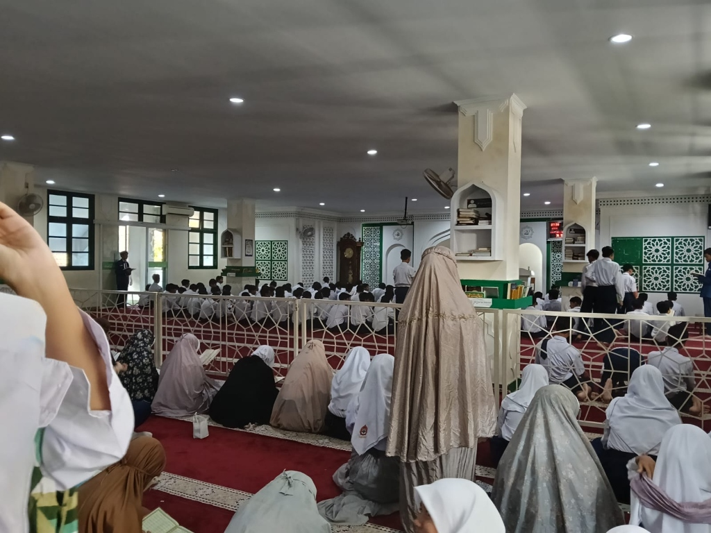
Sholat Dhuha Berjamaah
Pembiasaan Karakter & Religiusitas Siswa Setiap Pagi.
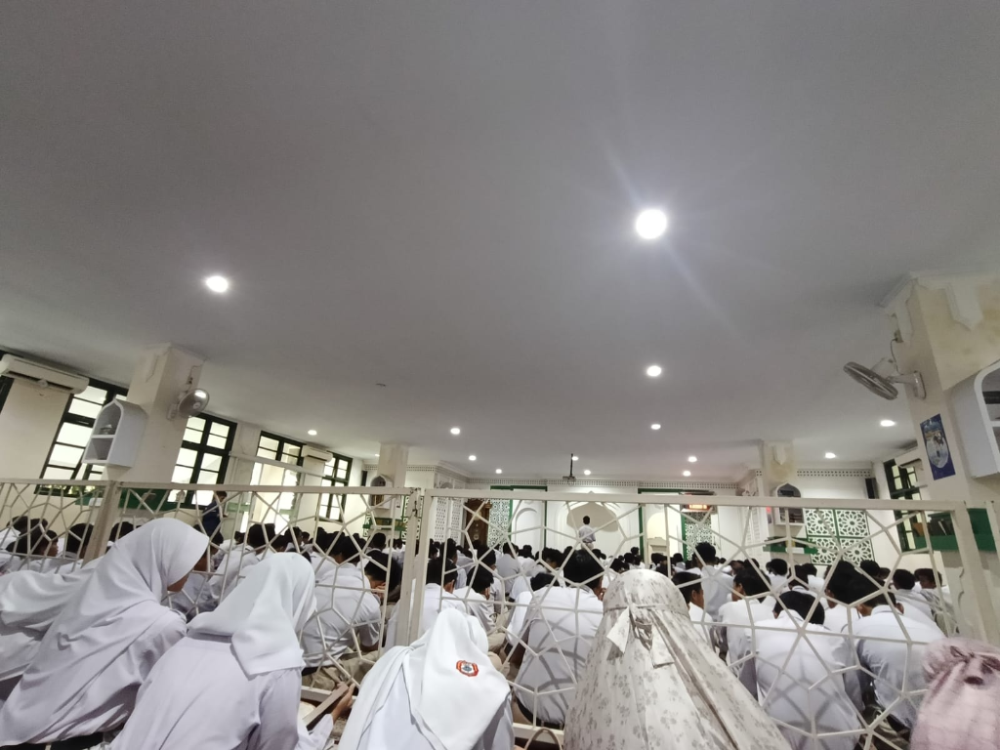
Pendampingan Ibadah Rutin
Penguatan Nilai Spiritual & Ketauladanan Siswa.
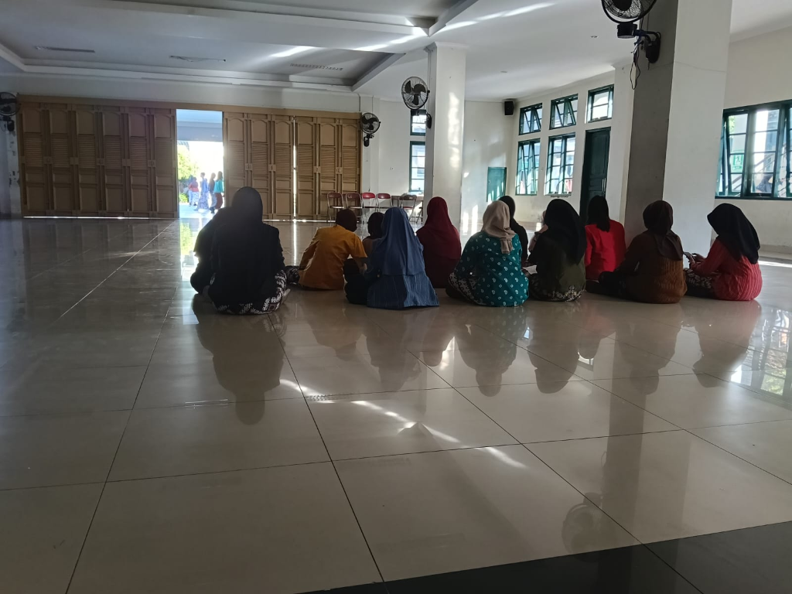
Bimbingan Asmaul Husna
Pembinaan Karakter Siswi Berhalangan Haid di Aula.
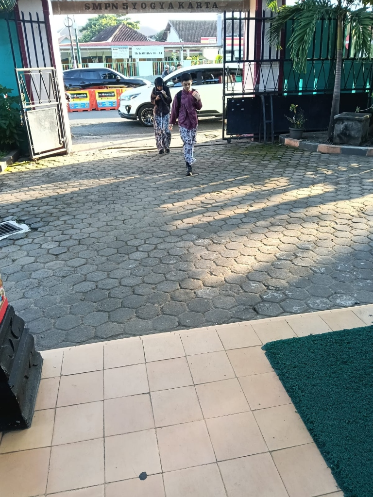
Salam Pagi & Senyum 5S
Penyambutan Siswa di Gerbang Depan Sekolah.
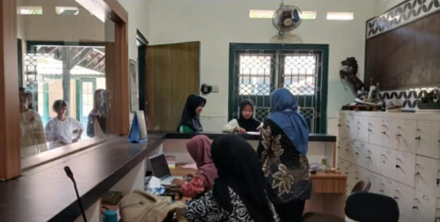
Piket Lobi & Pelayanan Tamu
Kedisiplinan & Pelayanan Informasi Sekolah.
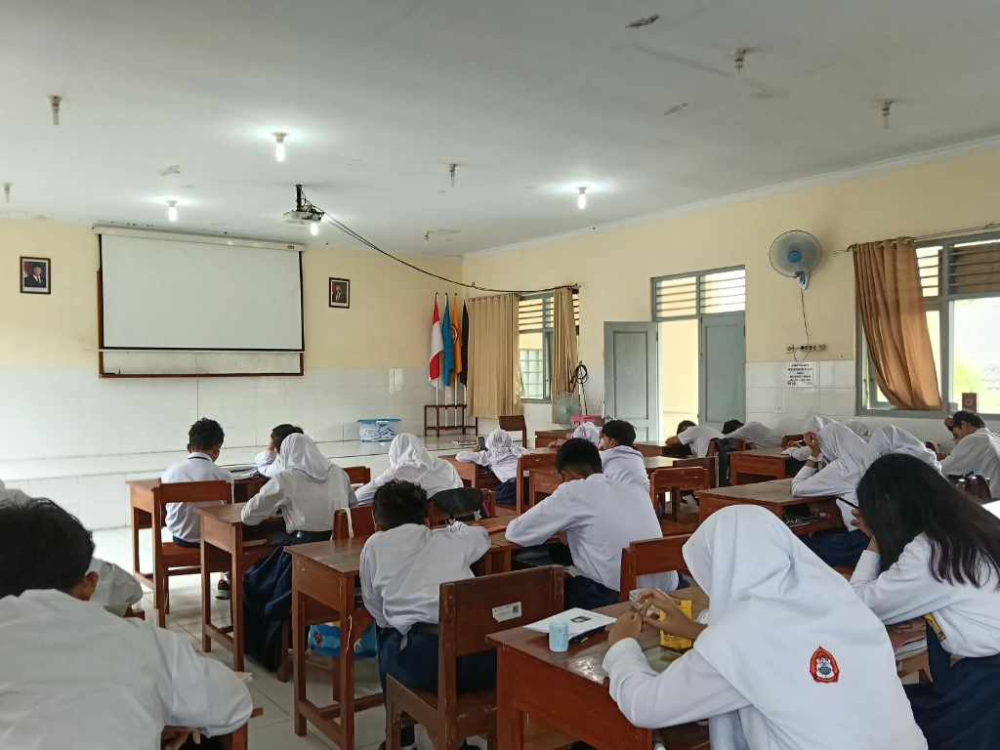
Pengawasan Asesmen Ujian
Pengawasan Ujian Sumatif ASTS & AKM Kelas.
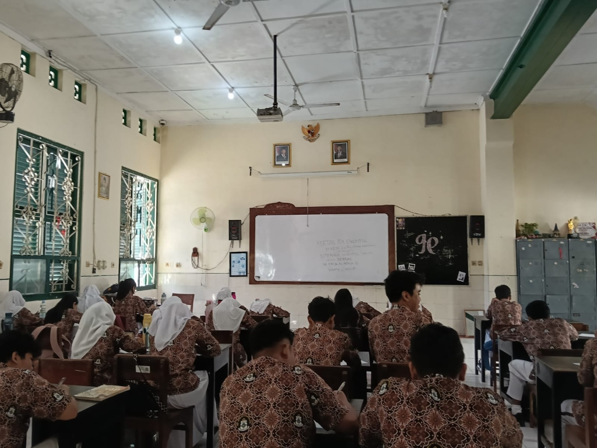
Guru Pengganti (Inval)
Pendampingan Kelas saat Guru Mapel Berhalangan.
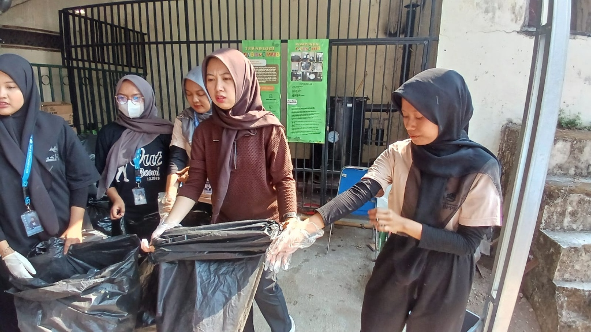
Aksi Pilah Sampah
Edukasi Kebersihan & Kepedulian Lingkungan Hidup.
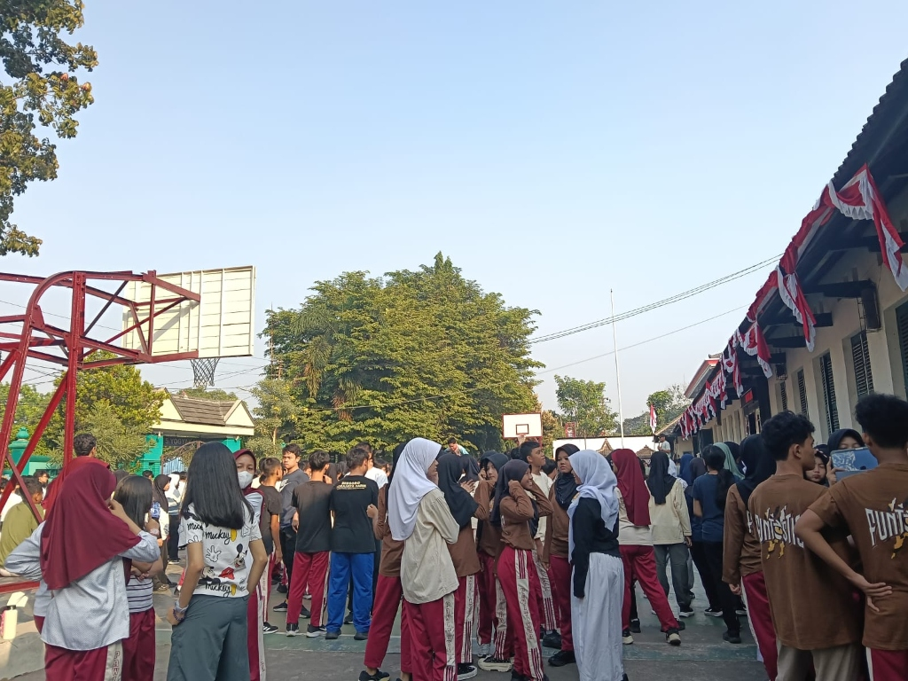
Senam Sehat HUT DIY
Peluncuran Logo Baru HUT DIY di Lapangan.
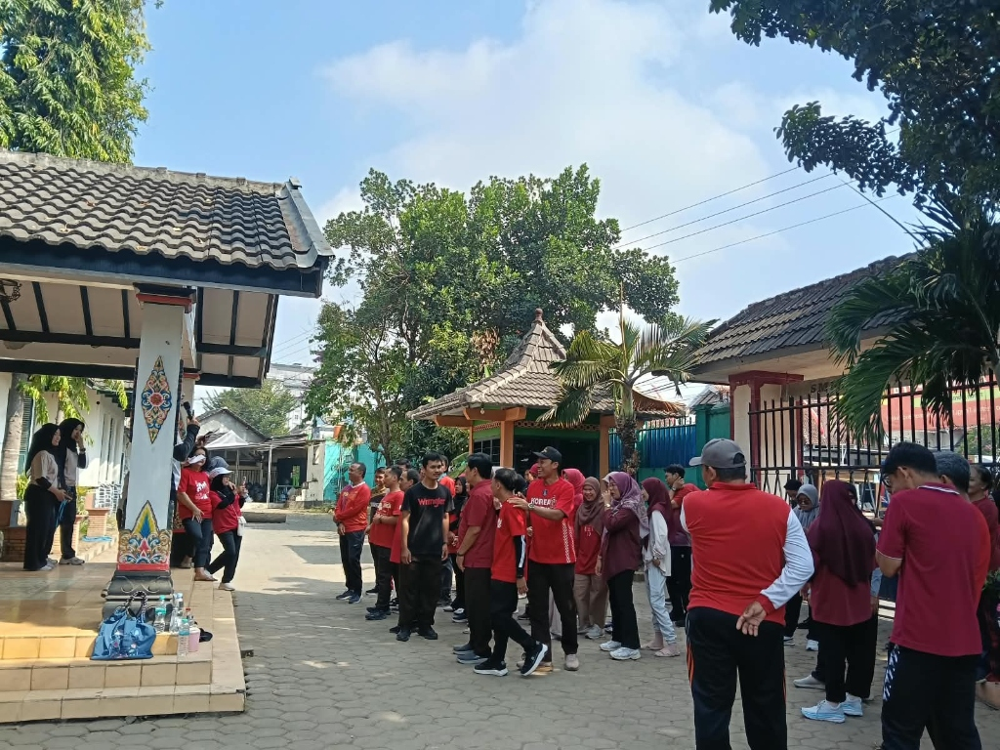
Panitia Lomba HUT RI ke-80
Penyelenggaraan Lomba Kemerdekaan Siswa.
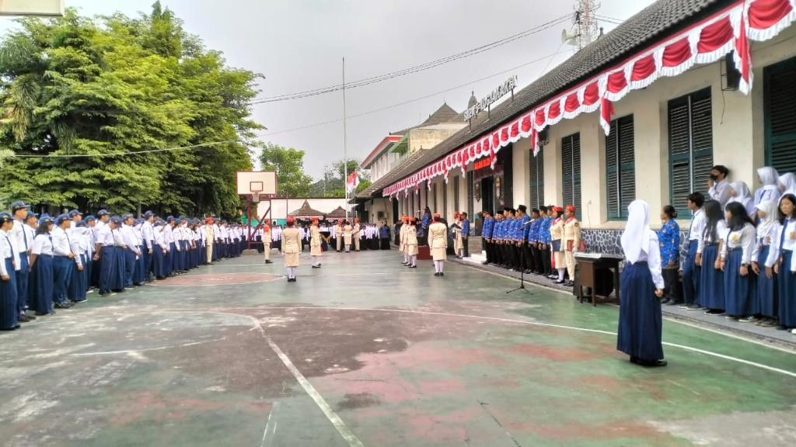
Upacara Bendera HUT RI
Peringatan Detik-Detik Proklamasi Kemerdekaan.
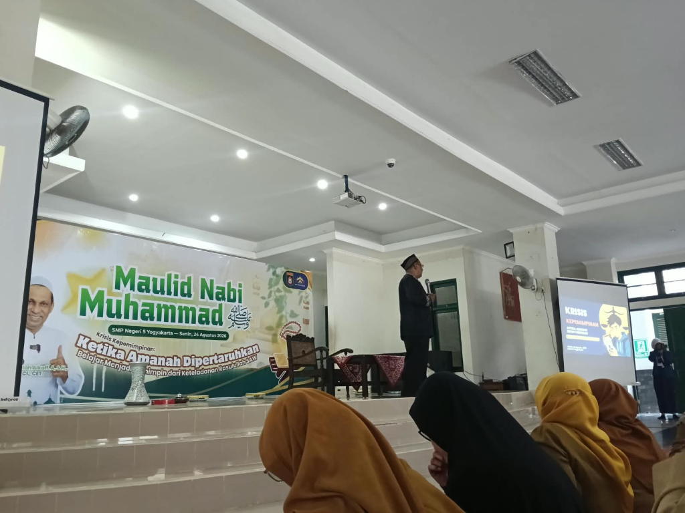
Peringatan Maulid Nabi SAW
Pengajian & Pembinaan Nilai Kerohanian Siswa.
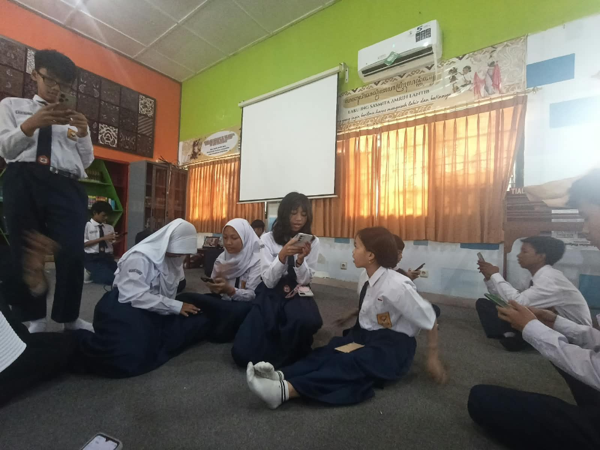
Aktivasi Kartu Perpustakaan
Pelayanan & Pendampingan Budaya Literasi Siswa.
Distribusi Persentase Jam Kerja Non-Mengajar (Total: 88.5 Jam)
Analisis Deskriptif Kontribusi & Pembiasaan Karakter
Analisis & Evaluasi Pelaksanaan: Kegiatan Non-Mengajar (88.5 Jam)
Deskripsi Praktik Non-Mengajar: Kegiatan non-mengajar dilaksanakan secara terstruktur selama 8 minggu (3 Agustus – 25 September 2026) dengan total alokasi 88.5 jam di SMPN 5 Yogyakarta. Keterlibatan mahasiswa PPL II mencakup 5 pilar utama budaya sekolah: pembiasaan religius (Sholat Dhuha & Asmaul Husna), kepanitiaan kultural (HUT RI ke-80 & HUT DIY), pelayanan kedisiplinan (Piket Lobi & Salam Pagi 5S), pengawasan asesmen akademik (ASTS & AKM), serta pendampingan budaya literasi perpustakaan.
5 Pilar Kontribusi Non-Mengajar
Pembiasaan Religius
Pendampingan Sholat Dhuha berjamaah & Asmaul Husna rutin setiap pagi (28 Jam).
Kepanitiaan Kultural
Panitia HUT RI ke-80, petugas upacara bendera, dan senam bersama HUT DIY (17 Jam).
Kedisiplinan & Piket
Piket Salam Pagi 5S di gerbang & pelayanan informasi di lobi penerimaan tamu (15.5 Jam).
Asesmen & Akademik
Pengawasan Ujian Sumatif ASTS, AKM Kelas, dan asesmen diagnostik murid (18 Jam).
Budaya Literasi
Pendampingan membaca 15 menit sebelum KBM & aktivasi kartu perpustakaan (10 Jam).
- Integrasi Budaya Sekolah: Mahasiswa PPL II menyatu penuh dengan ekosistem warga sekolah SMPN 5 Yogyakarta.
- Pembentukan Karakter Murid: Terwujudnya kebiasaan 5S, kedisiplinan jam masuk, dan ketertiban ibadah pagi.
- Keterampilan Manajerial: Mengasah keahlian organisasi, koordinasi kepanitiaan, dan pengelolaan event sekolah.
- Hubungan Emosional Positif: Terbangunnya keakraban sosial dan empati antara praktikan dan peserta didik.
- Manajemen Waktu Fisik: Keseimbangan alokasi durasi antara persiapan modul ajar kelas dan tugas piket sekolah.
- Pemerataan Pendampingan: Pembagian peran piket yang lebih presisi saat jam puncak kedatangan murid.
Penilaian & Refleksi Evaluasi Pembelajaran
Instrumen & Analisis AsesmenSimulasikan nilai rubrik inkuiri, tinjau grafik kognitif pre-test/post-test, rubrik observasi sikap Pancasila, dan analisis kuantitatif butir soal PG.
Interaktif: Simulator Penghitungan Skor Rubrik Inkuiri
Pilih tingkat capaian indikator siswa pada dropdown di bawah untuk melihat kalkulasi nilai akhir secara otomatis
Siswa telah mencapai Kriteria Ketercapaian Tujuan Pembelajaran (KKTP). Direkomendasikan mengikuti pengayaan.
Distribusi Nilai Pre-Test vs Post-Test (32 Siswa Kelas 7I)
Matriks Pemetaan Tingkat Kesukaran Soal Evaluasi Kognitif
| Tingkat Kognitif (Bloom) | Jumlah Soal | Indikator Capaian |
|---|---|---|
| C1 (Mengingat) | 3 Soal | Menyebutkan definisi besaran pokok, satuan SI, dan wujud zat. |
| C2 (Memahami) | 5 Soal | Membedakan perubahan fisika dan kimia berdasarkan ciri reaksi. |
| C3 (Menerapkan) | 4 Soal | Mengonversi nilai skala suhu Celsius ke Reamur/Fahrenheit. |
| C4 (Menganalisis) | 3 Soal | Menganalisis hubungan koefisien pemuaian logam pada bimetal. |
Distribusi Nilai Pre-Test vs Post-Test (32 Siswa Kelas 7I)
Rubrik Observasi Sikap (Profil Pelajar Pancasila)
Aspek sikap dinilai sepanjang proses pembelajaran kelompok menggunakan lembar observasi guru dengan rentang skala 1-4.
| Dimensi Pancasila | Kriteria Skor 4 (Sangat Berkembang) | Kriteria Skor 3 (Berkembang Sesuai Harapan) | Kriteria Skor 2 (Mulai Berkembang) | Kriteria Skor 1 (Belum Berkembang) |
|---|---|---|---|---|
| Gotong Royong | Sangat aktif membagi tugas kelompok, mengajari teman sebaya yang kesulitan membaca termometer. | Ikut bekerja kelompok secara disiplin dan menyelesaikan tugas bagiannya sendiri tepat waktu. | Hadir dalam diskusi kelompok namun kurang berkontribusi memberikan bantuan fisik/ide. | Pasif, mengganggu kelompok lain, tidak menyelesaikan bagian pekerjaannya. |
| Bernalar Kritis | Mampu mengemukakan analisis ketidaksesuaian hipotesis dengan data percobaan secara ilmiah dan runtut. | Mengajukan pertanyaan kritis saat mendeteksi gelembung udara pada cairan pengisi termometer. | Mengikuti alur solusi guru secara pasif tanpa mencoba menganalisis kesalahan prosedur praktikum. | Menerima data praktikum teman lain mentah-mentah tanpa mengerti prosesnya. |
Analisis Kuantitatif Butir Soal PG
Analisis kualitas soal hasil ujian sumatif kognitif pilihan ganda untuk mendeteksi tingkat keandalan instrumen tes.
| Nomor Soal | Tingkat Kesukaran (P) | Daya Pembeda (D) | Status Soal | Rencana Tindak Lanjut |
|---|---|---|---|---|
| Soal 1 (C2) - Metode Ilmiah | 0.85 (Mudah) | 0.32 (Cukup) | Diterima | Simpan di bank soal untuk apersepsi berikutnya. |
| Soal 2 (C3) - Konversi Suhu | 0.54 (Sedang) | 0.45 (Baik) | Diterima | Sangat representatif untuk menguji keterampilan hitung matematis fisika. |
| Soal 3 (C4) - Pemuaian Bimetal | 0.28 (Sukar) | 0.15 (Jelek) | Revisi | Redaksi ilustrasi bimetal diperjelas agar tidak menimbulkan ambigu arah pembengkokan. |
| Soal 4 (C4) - Variabel Percobaan | 0.38 (Sedang) | 0.48 (Sangat Baik) | Diterima | Soal penalaran logika inkuiri yang sangat baik membedakan kelompok atas dan bawah. |
Repositori & Digital Link Asesmen (Pretest, Posttest, Refleksi, Angket)
Instrumen Digital Per SiklusAkses langsung ke instrumen Wayground (Pretest/Posttest), Mentimeter (Refleksi Siswa), serta Google Drive (Angket & Lembar Observasi):
Pretest Merancang Percobaan
Kuis Awal Metode Ilmiah & Identifikasi Variabel (Wayground).
Posttest Merancang Percobaan
Evaluasi Akhir Pemahaman Metode Ilmiah (Wayground).
Refleksi Pembelajaran Terbimbing
Umpan Balik Siswa Sesi Merancang & Melakukan Percobaan (Mentimeter).
Pretest Melakukan Percobaan
Asesmen Awal Prosedur & Etika Laboratorium IPA (Wayground).
Posttest Melakukan Percobaan
Evaluasi Capaian Keterampilan Lab & Pengolahan Data (Wayground).
Jurnal Refleksi Terbimbing
Lampiran 7: Jurnal Refleksi Guru & Peserta Didik Pembelajaran Terbimbing.
Lembar Penilaian Terbimbing
Lampiran 8: Lembar Evaluasi & Hasil Penilaian Pembelajaran Terbimbing.
Pretest Pengukuran
Asesmen Awal Besaran Pokok & Satuan SI (Wayground).
Posttest Pengukuran
Evaluasi Akhir Pemahaman Besaran & Satuan (Wayground).
Refleksi Pengukuran
Umpan Balik Siswa Pembelajaran Besaran & Satuan (Mentimeter).
Pretest Praktik Pengukuran
Asesmen Awal Alat Ukur Presisi Jangka Sorong & Neraca (Wayground).
Posttest Praktik Pengukuran
Evaluasi Keterampilan Membaca Skala Nonius & Neraca (Wayground).
Refleksi Praktik Pengukuran
Umpan Balik Sesi Praktikum Lab Alat Ukur Presisi (Mentimeter).
Angket Rasa Ingin Tahu S1
Instrumen Self-Report Minat & Rasa Ingin Tahu Sains Siswa.
Lembar Observasi Ingin Tahu S1
Instrumen Pengamatan Perilaku Rasa Ingin Tahu Siklus 1.
Jurnal Refleksi Siklus 1
Lampiran 7: Jurnal Refleksi Guru & Peserta Didik Siklus 1.
Lembar Penilaian Siklus 1
Lampiran 8: Lembar Evaluasi & Hasil Penilaian Pembelajaran Siklus 1.
Angket Rasa Ingin Tahu S2
Instrumen Self-Report Rasa Ingin Tahu Sains Pembelajaran TaRL.
Lembar Observasi Ingin Tahu S2
Instrumen Pengamatan Perilaku Rasa Ingin Tahu Siklus 2 (Final PTK).
Jurnal Refleksi Siklus 2
Lampiran 7: Jurnal Refleksi Guru & Peserta Didik Siklus 2.
Lembar Penilaian Siklus 2
Lampiran 8: Lembar Evaluasi & Hasil Penilaian Pembelajaran Siklus 2.
Refleksi Siklus Air
Umpan Balik Siswa Animasi Daur Hidrologi (Mentimeter).
Pretest Massa Jenis
Kuis Awal Kerapatan Zat & Pengukuran Massa Jenis (Wayground).
Posttest Massa Jenis
Evaluasi Akhir Penentuan Massa Jenis Benda (Wayground).
Refleksi Praktikum Massa Jenis
Umpan Balik Sesi Lab Fisik & Virtual Lab Massa Jenis (Mentimeter).
Jurnal Refleksi Siklus 3
Lampiran 7: Jurnal Refleksi Guru & Peserta Didik Siklus 3.
Lembar Penilaian Siklus 3
Lampiran 8: Lembar Evaluasi & Hasil Penilaian Pembelajaran Siklus 3.
Pretest Suhu & Skala
Kuis Awal Hakikat Suhu & Termometer (Wayground).
Posttest Suhu & Skala
Evaluasi Konversi Skala Suhu (Wayground).
Refleksi Suhu & Termometer
Umpan Balik Pembelajaran Konsep Suhu (Mentimeter).
Pretest Perpindahan Kalor
Asesmen Awal Konduksi, Konveksi & Radiasi (Wayground).
Posttest Perpindahan Kalor
Evaluasi Pemahaman Mekanisme Transfer Kalor (Wayground).
Refleksi Perpindahan Kalor
Umpan Balik Siswa Investigasi Kalor (Mentimeter).
Jurnal Refleksi Siklus 4
Lampiran 7: Jurnal Refleksi Guru & Peserta Didik Siklus 4.
Lembar Penilaian Siklus 4
Lampiran 8: Lembar Evaluasi & Hasil Penilaian Pembelajaran Siklus 4.